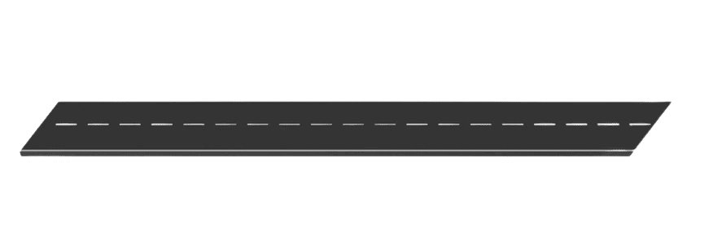

Efecto Doppler IV: Fuente en movimiento, receptor en movimiento
Si tanto el foco emisor de ondas como el receptor están en movimiento, la frecuencia aparente o frecuencia percibida por este último aumentará cuando receptor y emisor aumenten su distancia de separación y disminuirá siempre que se reduzca la distancia de separación entre ellos. La siguiente expresión se considera el caso general del efecto Doppler:

- f : Frecuencia percibida por el receptor y frecuencia emitida por el foco respectivamente. Su unidad de medida en el Sistema Internacional (S.I.) es el hertzio (Hz)
- v : Velocidad de propagación de la onda en el medio. Es constante y depende de las características del medio. Se relaciona con la longitud de onda y la frecuencia según v=λ·f. Su unidad de medida en el S.I. es el metro por segundo (m/s)
- vL, vS: Velocidad del receptor y del emisor (foco) respectivamente. Ambas se suponen menor que v Su unidad de medida en el S.I. es el m/s
CALCULADORA
Resultado:


